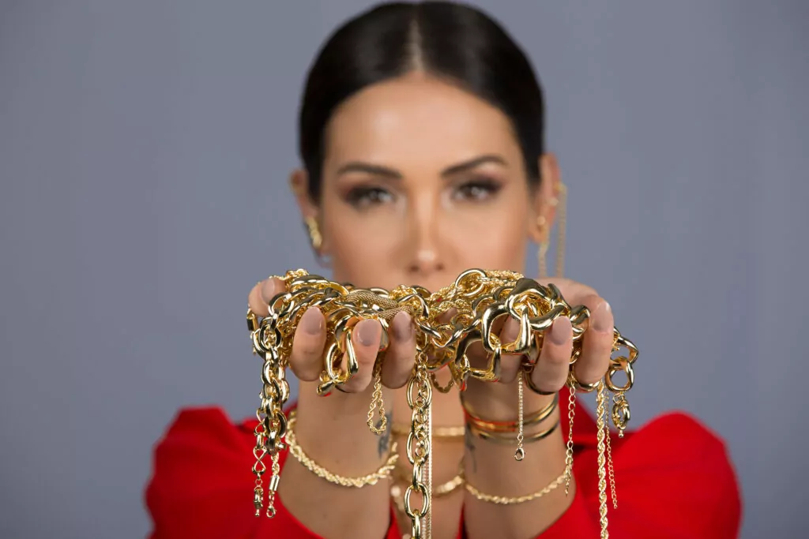

A beleza está nos detalhes.
Descubra uma seleção especial de joias pensadas para valorizar sua essência, elegância e personalidade com todo o cuidado e afeto.
Conheça as peçasColeção em Destaque
Toque na foto ou no nome de uma peça para ver o resumo completo e conversar sobre ela.


Olá, sou a Aline Borges
Cada peça que você encontra por aqui carrega uma intenção: celebrar momentos,
realçar a sua beleza natural e contar histórias através do brilho.
Seleciono cada detalhe pensando em transformar o cotidiano em algo extraordinário e cheio de afeto. Será um prazer fazer parte da sua história!
Anos de Experiência e Confiança no Mercado
A Aline Joias consolidou sua trajetória através do compromisso inegociável com a qualidade, autenticidade e o atendimento humanizado. Cada peça passa por um rigoroso processo de seleção para garantir que você receba não apenas um acessório, mas um símbolo duradouro de afeto e bom gosto.
Seleção Rigorosa
Padrão elevado de acabamento e durabilidade em todas as coleções.
Atendimento Único
Suporte dedicado e consultoria personalizada para cada cliente.
Quer nos acompanhar nas redes sociais e receber todas as nossas novidades?
Fique por dentro dos lançamentos exclusivos, bastidores e coleções limitadas.